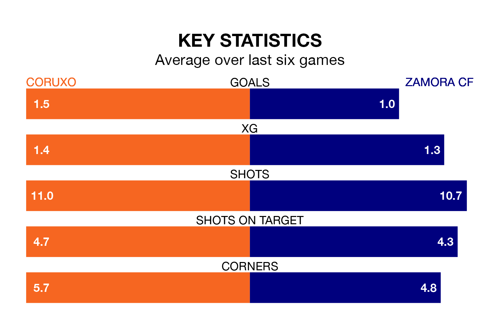

Zamora CF face Coruxo on Sunday seeking to protect their long unbeaten run in the Segunda División RFEF Group 1.
Zamora are unbeaten in seven, with three wins and four draws, ahead of the 3.15pm kick-off.
They face a Coruxo team who have won three and drawn three over the same number of games.
With 25 goals in 21 games so far this season, Coruxo are scoring more than average in the league with 1.2 goals per game. But they are conceding more than average too, letting in 27 goals at a rate of 1.3 per game.
Zamora, meanwhile, are average scorers, with 1.1 goals per game. They have conceded 0.5 goals per game.
The away team are third in the table after 21 games, of which they have won 12 and drawn six, earning 42 points.
The hosts are five places behind Zamora in eighth, with eight wins and five draws putting them on 29 points.
In the last 10 years, Coruxo and Zamora have played each other on eight occasions. Coruxo won one of them, Zamora five, and they drew twice.
On average, Coruxo scored 0.5 goals and Zamora 1.4 in those matches.
Their last meeting was on October 1, when Zamora won 2-0 at home.
Coruxo's last match was on February 3, a 0-0 draw against CD Guijuelo.
Zamora beat SD Compostela 2-1 last time out, on Sunday.
Updated: 10:28 (UTC), 06/02/24